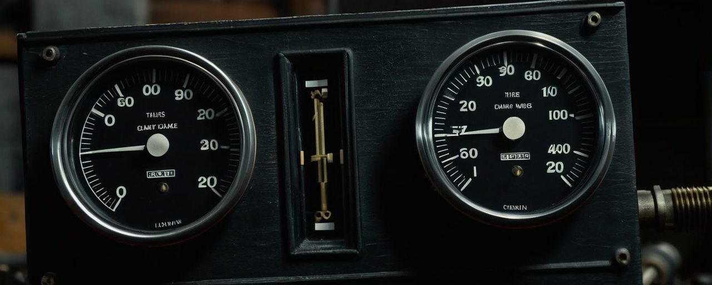

Decision: Pony's real bug was the prompt, Illustrious's wasn't
Two models looked wrong in the gallery — Pony and Illustrious — and it took looking at actual renders (not just re-reading the recipe) to realize they were wrong for completely different reasons, one fixable and one not by the same means.
Pony: a real config bug
Pony's good_at tags (and its own builder — PONY_POS_PREFIX = 'score_9, score_8_up, score_7_up, ') say it's a Danbooru score-tag fine-tune, exactly like Illustrious and
NoobAI. But config/gallery.ts had models.pony.prompt_size: 's', left over from before
the booru-tag research moved Illustrious/NoobAI onto tag
prompts. Five of the six scenes (van, dragon, doll, spirit, embrace) don't define
an s prompt, so promptFor's fallback chain (per-model override > prompt_size > "all")
silently handed Pony the full natural-language photoreal paragraph meant for
Juggernaut/RealVisXL — the exact "unstable or inaccurate results on prose" mismatch that
research already warned about, just never checked against Pony.
Fix: prompt_size: 'b'. One line. Because promptHash is computed from the resolved
prompt text, changing it automatically deprecated all 216 existing Pony cells —
lig deprecate never needed to run by hand.
Illustrious: not a bug, a convergence floor
Walking the actual step ladder (not just the ceiling render) told a different story. At
step 35 every scene is clean. Below ~16 steps, illustrious_doll renders a completely
different, uniformly "shattered crystal" composition — not a blurrier version of the final
image, a different one. euler_ancestral injects fresh noise every step; a bare (no
Lightning) SDXL model given too few of those steps hasn't found its basin yet, so it settles
into a different, incoherent mode entirely. The recipe itself (cfg 5.0, CLIP skip 2, its own
negative) already matches the documented research exactly — there was nothing to fix there.
That distinction matters for what "deprecate" actually buys you. KSampler is
deterministic: same seed, same steps, same settings in → same pixels out. Pony's fix
changes the input (the prompt), so regenerating produces something genuinely different.
Deprecating Illustrious's sub-21 rungs changes nothing about the render recipe, so a
same-settings rerun reproduces the identical noise. Tried swapping to a non-ancestral
sampler (dpmpp_2m) to see if it converges cleaner at low steps — the test got interrupted
before it produced a verdict, and rather than block the fix on that, deprecated the 96
affected cells (steps 1–20 across all scenes/seeds) anyway on the explicit call that a
same-pixel rerun is an acceptable placeholder while a real sampler fix is investigated
separately, over silently leaving known-broken renders live indefinitely.
The lesson
"Deprecate and rerun" only fixes what changed. Before marking cells deprecated, ask what's actually different this time — a prompt, a checkpoint, a setting — because if the answer is "nothing," the run just spends real GPU time re-confirming the same picture.